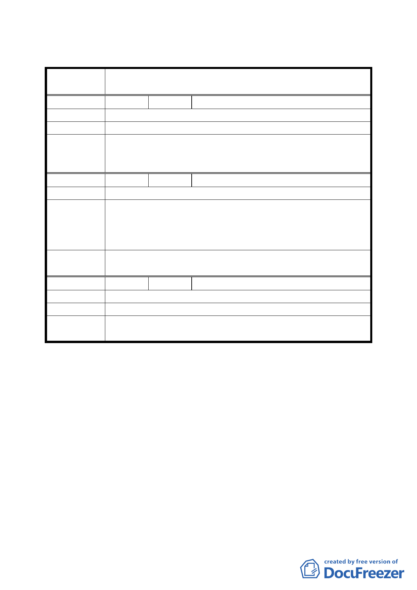

臺北市都市計畫委員會公民或團體所提意見綜理表
案
名
擬定臺北市文山區武功國小西北側機關用地（供派出
所使用）細部計畫案
編 號 １ 陳情人 張紅木
陳 情 理 由 希望建地增加、樓層增高，有里民活動場所。
建 議 辦 法 依學校原有游泳池預定地坪數規劃或增加。
委員會議
決議
一、本案將由發展局考量派出所與學校需求，就功能定位角
度從檢討都市空間的配置後，再另通盤處理。
二、 至於里民中心之設置，則請市府檢討評估。
編 號 ２ 陳情人 吳祚榮
陳情理由
請市警察局及萬隆派出所針對自己需求及地方需求做出相對
建議辦法
評估，務必將地方需求納入設計，由區公所編列配合預算。
若土地需求不夠，儘早藉此細部計畫案定案前多溝通為地方
爭取，達成多贏。
委員會議
決議
同編號 1 決議一 。
編 號 ３ 陳情人 林敬玉
陳情理由
建 議 辦 法 原留派出所與郵局之間有巷道，請保留並加寬以方便通行。
委員會議
決議
本計畫案將由發展局再另通盤處理。
討論事項四
案名：變更臺北市南港區玉成段一小段 538 地號等 18 筆國小用地
為住宅區主要計畫案
說明：
一、本案係市府 94 年 12 月 21 日以府都規字第 09419565400 號函
送到會。
二、法令依據：都市計畫法第 27 條第 1 項第 3 款
三、申請單位：臺北市政府
四、計畫範圍：詳計畫圖所示
五、變更理由及內容：詳計畫書
五